- Módulo: Administración de Sistemas Operativos
- Título del trabajo
- Componentes del grupo: Alejandro Garcia Yumar
- Curso Académico: 2013/2014
- Fecha de entrega: 7 de Noviembre de 2014
El ejercicio consiste en configurar ldap
Para empezar debemos instalar las librerias, para ello escribimos apt-get install libpam-ldap.
Acto seguido nos aparecera las ventanas de instalacion en el orden siguiente, siguiendo las indicaciones de la imagen.
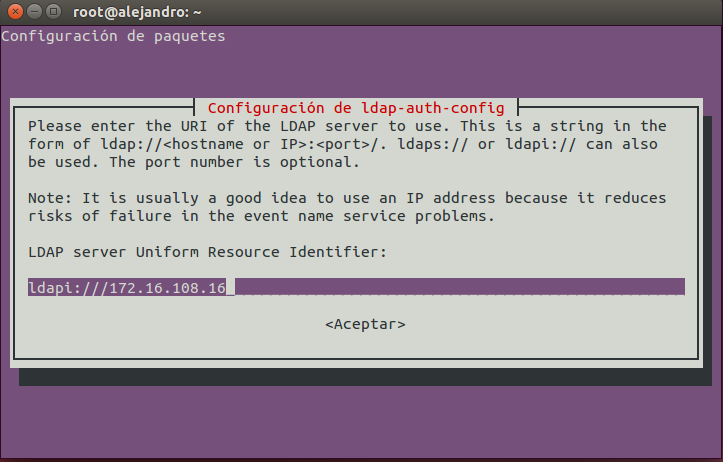 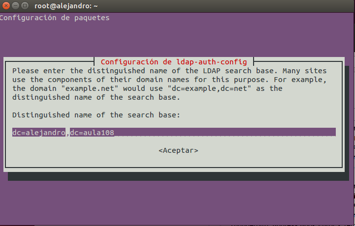 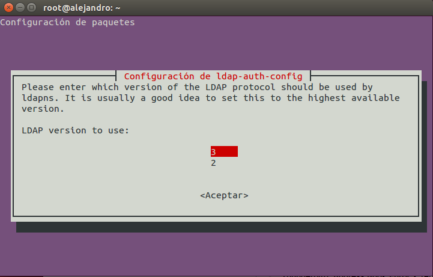En la siguiente imagen debemos decir que si.
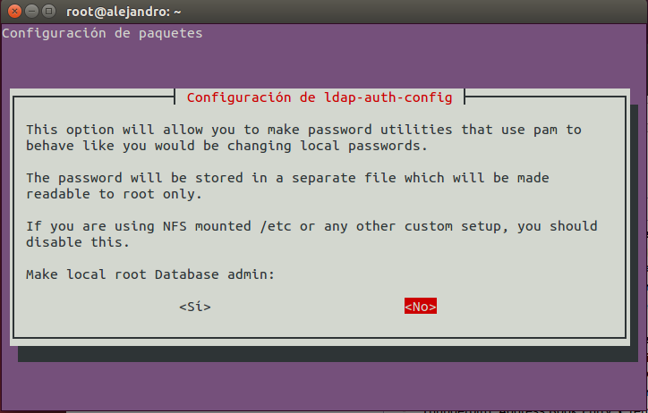 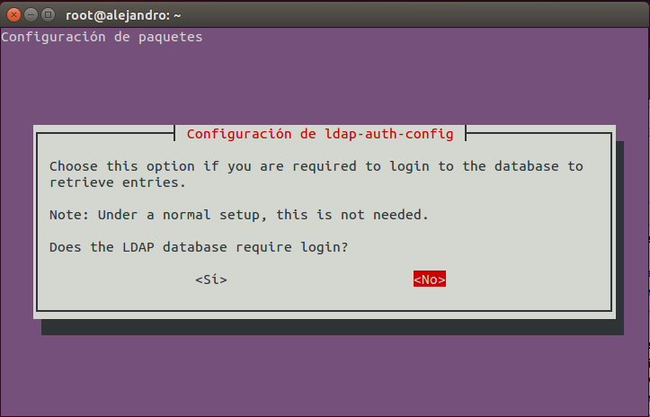Para crear el usuario root.
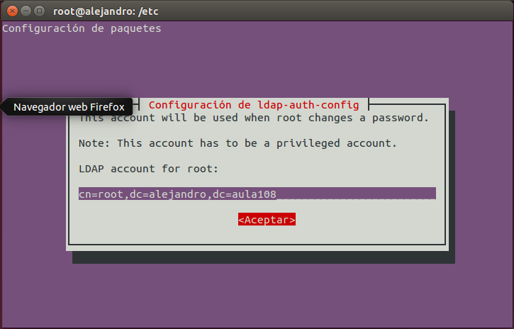 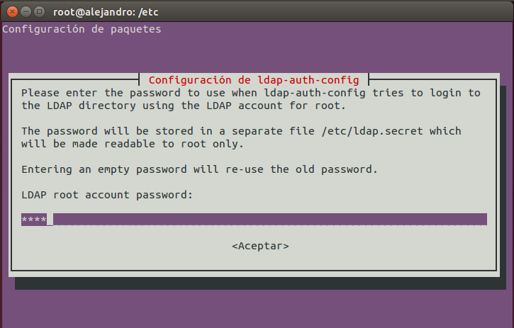 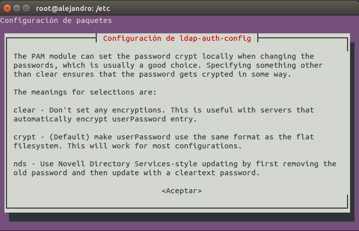 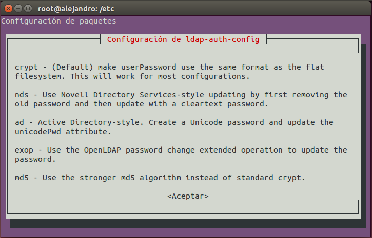 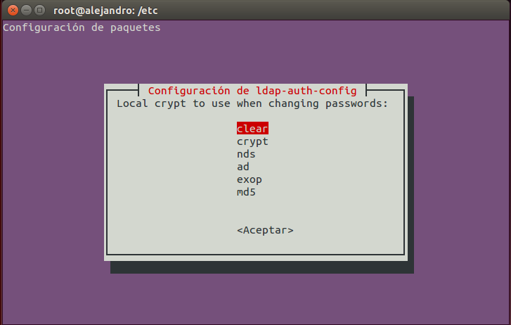Ahora consiste en configurar los documentos /etc/ldap.conf, /etc/nsswitch.conf, /etc/pam.d/common-auth, /etc/pam.d/common-account, /etc/pam.d/common-session, /etc/pam.d/common-password respectivamente, en las lineas que se indican en la imagen
/etc/ldap.conf.
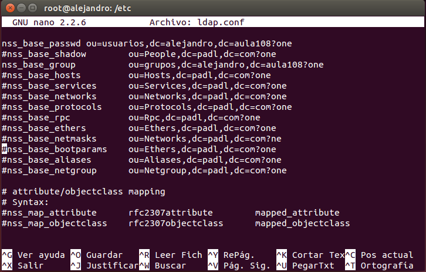/etc/nsswitch.conf.

/etc/pam.d/common-auth
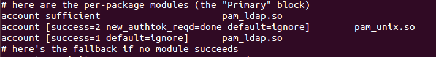/etc/pam.d/common-account
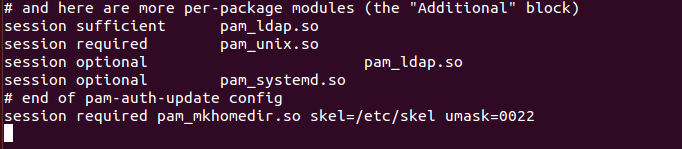/etc/pam.d/common-session
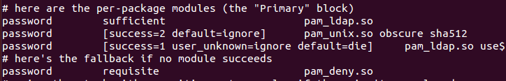/etc/pam.d/common-password.

A partir de este punto deberia poder acceder con el cliente, pero ocurre el problema de que una vez reinicie el equipo no me deja acceder a el.